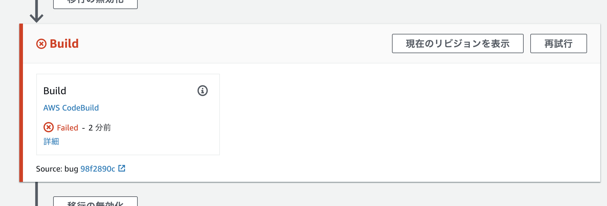

テスト失敗時にデプロイが止まることを確認
バグが混入した際に、テストで処理が失敗し、デプロイが途中で止まることを確認するため、フォークしたリポジトリのコードを修正します。
エディタで FizzBuzz のロジックが記述されているファイル、src/model/fizzbuzz.jsを開きます。
意図的にバグを混入させるため、
if (i % 15 == 0) {
と書かれた行を
if (i % 10 == 0) {
のように修正します。
修正が終わったらコミットし、GitHub 上にプッシュします。
git commit -am bug
git push origin master
GitHub にプッシュすると、CodePipeline での処理が開始されます。 しかし、CodeBuild でテストが失敗し、ECS へのデプロイは実行されません。

テストが自動で実行される環境が構築されていたため、バグの混入したバージョンがデプロイされるのを防ぐことができました！